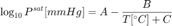

Antoine's Equation
Antoine's equation for the vapor pressure of a pure component is given by

This Matlab script demonstrates typical process engineering applications and calculations using Antoine's equation.
Contents
- Computing the saturation pressure of water at 100C
- Implementing Antoine's equation as an anonymous function
- Plotting saturation pressure as a function of temperature
- Normal Boiling Point
- What is the boiling temperature of water on Mount Everest?
- Implementing a function to compute saturation temperature.
- Exercise
- Exercises
Computing the saturation pressure of water at 100C
% Step 1. Get the constants A, B, and C for water in the appropriate % temperature range. A = 7.96681; B = 1668.21; C = 228.0; % Step 2. Compute the saturation pressure. T = 100; Psat = 10^(A - B/(T + C)); % Step 3. Report the results disp(['Saturation pressure of water at ',num2str(T),' deg C is ',num2str(Psat),' mmHg.']);
Saturation pressure of water at 100 deg C is 759.983 mmHg.
Implementing Antoine's equation as an anonymous function
Matlab anonymous functions are a very useful way to implement simple formulas in Matlab. Learning to use anonymous functions is a big step towards mastering Matlab for routine engineering calculations.
Psat = @(T) 10^(7.96681 - 1668.21/(T + 228.0)); T = 100; disp(['Saturation pressure of water at ',num2str(T),' deg C is ',num2str(Psat(T)),' mmHg.']);
Saturation pressure of water at 100 deg C is 759.983 mmHg.
Plotting saturation pressure as a function of temperature
T = linspace(0,150,100); semilogy(T,arrayfun(Psat,T)); xlabel('Temperature [C]'); ylabel('Vapor Pressure [mmHg]');

Normal Boiling Point
The normal boiling point of a substance is the temperature at which the saturation pressure is equal to 1 atmosphere (or 760 mmHg).
% Step 1. Create a function that will have a value of zero at the desired % temperature. f = @(T) 760 - Psat(T); % Step 2. Use the Matlab function fzero to solve for the desired % temperature. Tboil = fzero(f,[0 150]); % Step 3. Display the result. disp(['Normal boiling point of water is ',num2str(Tboil),' deg C.']);
Normal boiling point of water is 100.0006 deg C.
What is the boiling temperature of water on Mount Everest?
The atmospheric pressure on the top of Mt. Everest is about 260 mmHg.
P = 260; f = @(T) P - Psat(T); Tboil = fzero(f,[0 150]); disp(['Temperature of boiling water on Mt. Everest is ',num2str(Tboil), ' deg C']);
Temperature of boiling water on Mt. Everest is 72.4789 deg C
Implementing a function to compute saturation temperature.
The task of computing the temperature corresponding to saturation pressure can be implemented using anonymous functions. We'll use it to compute the boiling point of water in Denver where the barometric pressure is 621 mmHg.
Tsat = @(P) fzero(@(T) P - Psat(T),100); disp(['Temperature of boiling water in Denver is ',num2str(Tsat(621)), ' deg C']);
Temperature of boiling water in Denver is 94.4393 deg C
Exercise
The deepest point in Lake Superior is 406 meters. Assuming the density of water is 1.0 g/ml, what is the pressure at the depth? What is the boiling point of water at that pressure?
% Step 1. Compute the pressure in Pascals P = (101325 + 406*1000*9.8); % Step 2. Convert to mmHg P = 760*P/101325; disp(['Pressure at the bottom Lake Superior is ',num2str(P/760),' atm.']); % Step 3. Compute the saturation pressure disp(['At the bottom of Lake Superior ']); disp([' the pressure is ',num2str(P/760),' atm.']); disp([' the temperature of boiling water is ',num2str(Tsat(P)), ' deg C']);
Pressure at the bottom Lake Superior is 40.2677 atm. At the bottom of Lake Superior the pressure is 40.2677 atm. the temperature of boiling water is 251.2275 deg C
Exercises
- What is the normal boiling of methanol?
- You observe that fog has formed on a cool fall morning at a temperature of 55 deg F. What is the vapor pressure of water?